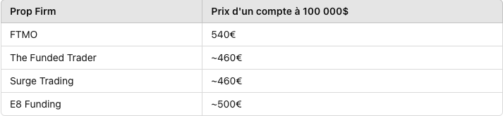

FTMO propose différents comptes financés accessibles après avoir réussi les deux phases de leur challenge. Ce challenge a un coût, représentant environ
0,5% à 1,5% de la valeur du compte financé. Voici les prix pour chaque taille de compte chez FTMO :
Généralement, dans toutes les sociétés de propfirm, plus le compte financé est important, plus le coût est proportionnellement réduit. Par exemple, il est trois
fois moins cher de financer un compte de 200,000$ que d’acheter 20 comptes de 10,000$ chacun.
FTMO se situe dans la tranche haute des tarifs pour accéder à des comptes financés, comparé à d’autres propfirms. Ce léger surcoût est justifié par la fiabilité
et l’excellente réputation de FTMO, des critères essentiels dans la détermination des tarifs d’une propfirm.
Voici une comparaison des prix pour un compte de 100,000$ parmi différentes propfirms :
FTMO propose le remboursement des frais du challenge en cas de réussite et de partage des profits réalisés. Ainsi, il est possible d’obtenir un compte financé
de 200,000$ gratuitement. Certaines autres propfirms offrent également cette option, mais elle n’est pas encore largement répandue.
Pour de nombreux traders expérimentés, pouvoir utiliser leurs instruments financiers préférés sur leur plateforme de prédilection est crucial. Plus on impose un
environnement de trading différent, plus on risque de frustrer le trader. Il est donc essentiel pour les propfirms de s’adapter à cette exigence.
FTMO, étant l’une des plus anciennes propfirms pour traders particuliers, propose une large gamme de plateformes de trading grâce à de nombreux
partenariats. Contrairement aux propfirms émergentes qui offrent souvent une seule plateforme, FTMO permet l’accès aux quatre plateformes les plus populaires :
FTMO se distingue par sa flexibilité et son adaptabilité, permettant aux traders de travailler dans un environnement qui leur est familier et confortable.